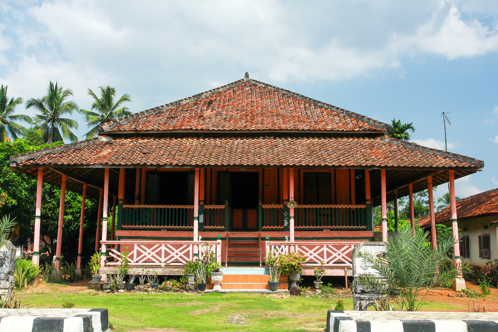
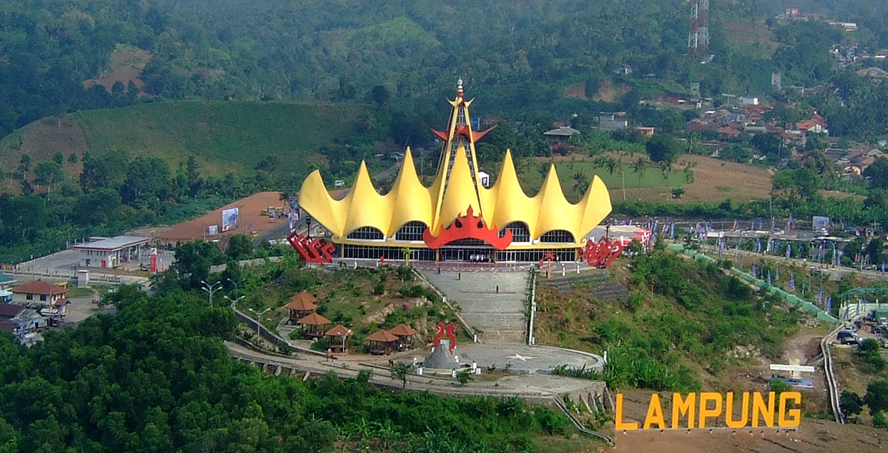
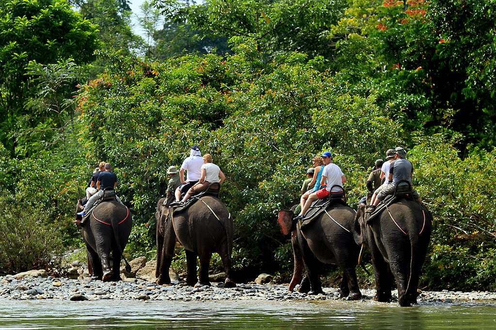
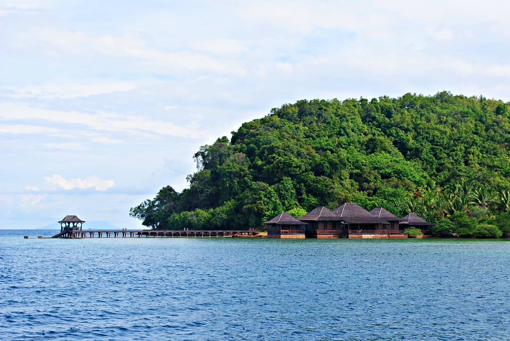

Sejarah

Provinsi Lampung lahir pada tanggal 18 Maret 1964 dengan ditetapkannya Peraturan Pemerintah Nomor 31964 yang kemudian menjadi Undang-undang Nomor 14 tahun 1964. Sebelum itu Provinsi Lampung merupakan Karesidenan yang tergabung
dengan Provinsi Sumatera Selatan.
Kendatipun Provinsi Lampung sebelum tanggal 18 maret 1964 tersebut secara administratif masih merupakan bagian dari Provinsi Sumatera Selatan, namun daerah ini jauh sebelum Indonesia merdeka memang telah menunjukkan potensi yang
sangat besar serta corak warna kebudayaan tersendiri yang dapat menambah khasanah adat budaya di Nusantara yang tercinta ini. Oleh karena itu pada zaman VOC daerah Lampung tidak terlepas dari incaran penjajahan Belanda.
Konon, asal-usul nama Lampung sendiri berasal dari bahasa Batak, Lappung, yang berarti besar. Namun, versi lain ada yang menyebut nama provinsi ini berasal dari kata Lampohwang.
Geografis

Provinsi Lampung memiliki luas 35.376,50 km² dan terletak di antara 105°45'-103°48' BT dan 3°45'-6°45' LS. Daerah ini berada di sebelah barat berbatasan dengan Samudra Hindia, di sebelah timur dengan Laut Jawa, di sebelah utara
berbatasan dengan provinsi Sumatra Selatan dan Bengkulu, dan di sebelah selatan berbatasan dengan Selat Sunda. Beberapa pulau termasuk dalam wilayah Provinsi Lampung, yang sebagian besar terletak di Teluk Lampung, di antaranya:
Pulau Darot, Pulau Legundi, Pulau Tegal, Pulau Sebuku, Pulau Kelagian, Pulau Sebesi, Pulau Pahawang, Pulau Krakatau, Pulau Putus dan Pulau Tabuan. Ada juga Pulau Tampang dan Pulau Pisang di yang masuk ke wilayah Kabupaten
Pesisir Barat.
Keadaan alam Lampung, di sebelah barat dan selatan, di sepanjang pantai merupakan daerah yang berbukit-bukit sebagai sambungan dari jalur Bukit Barisan di Pulau Sumatra. Di tengah-tengah merupakan dataran rendah. Sedangkan ke
dekat pantai di sebelah timur, di sepanjang tepi Laut Jawa terus ke utara, merupakan perairan yang luas.
Wisata
Lampung kaya akan pesona alam yang luar biasa menawan dan menarik untuk didatangi. Mulai dari pantai, taman, pulau, air terjun, dan masih banyak lagi. Tak heran, apabila provinsi satu ini disebut dengan “The New Bali”.
Taman Nasional Way Kambas

Taman Nasional Way Kambas (TNWK) adalah taman nasional perlindungan gajah yang terletak di daerah Lampung tepatnya di Kecamatan Labuhan Ratu, Lampung Timur, Indonesia. Selain di Way Kambas, sekolah gajah (Pusat Latihan Gajah)
juga bisa ditemui di Minas, Riau. Gajah Sumatra (Elephas maximus sumatranus) yang hidup di kawasan ini semakin berkurang jumlahnya.
Pulau Pahawang

Pahawang merupakan salah satu objek wisata bahari yang paling terkenal di Provinsi Lampung. Pulau yang terkenal dengan keindahan alam baharinya ini masuk dalam kawasan Kecamatan Panduh Padada, Kabupaten Pasawaran, Lampung
Selatan. Untuk sampai di kawasan Pulau Pahawang, dari pusat Kota Bandar Lampung menempuh jarak sekitar 25 km atau 2 jam perjalanan darat menuju Pelabuhan Ketapang. Dari pelabuhan yang ramai perahu dan aktivitas nelayan ini,
perjalanan dilanjutkan menggunakan perahu boat selama 40 menit.